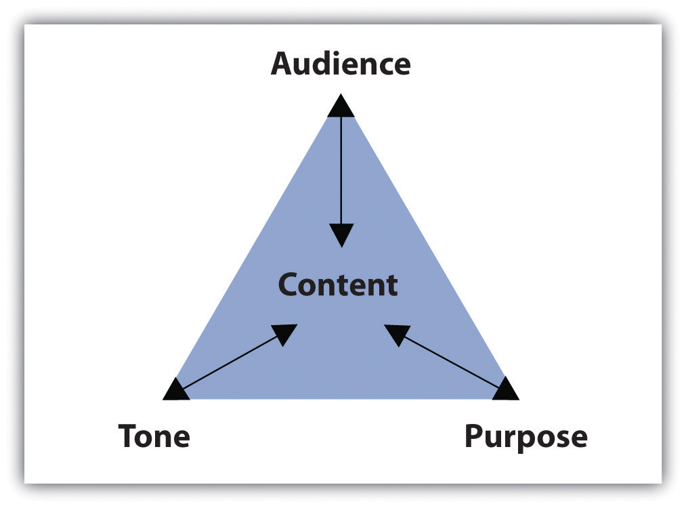

Imagine reading one long block of text, with each idea blurring into the next. Even if you are reading a thrilling novel or an interesting news article, you will likely lose interest in what the author has to say very quickly. During the writing process, it is helpful to position yourself as a reader. Ask yourself whether you can focus easily on each point you make. One technique that effective writers use is to begin a fresh paragraph for each new idea they introduce.
Paragraphs separate ideas into logical, manageable chunks. One paragraph focuses on only one main idea and presents coherent sentences to support that one point. Because all the sentences in one paragraph support the same point, a paragraph may stand on its own. To create longer assignments and to discuss more than one point, writers group together paragraphs.
Three elements shape the content of each paragraph:
Figure 6.1 Purpose, Audience, Tone, and Content Triangle
The assignment’s purpose, audience, and tone dictate what the paragraph covers and how it will support one main point. This section covers how purpose, audience, and tone affect reading and writing paragraphs.
The purpose for a piece of writing identifies the reason you write a particular document. Basically, the purpose of a piece of writing answers the question “Why?” For example, why write a play? To entertain a packed theater. Why write instructions to the babysitter? To inform him or her of your schedule and rules. Why write a letter to your congressman? To persuade him to address your community’s needs.
In academic settings, the reasons for writing fulfill four main purposes: to summarize, to analyze, to synthesize, and to evaluate. You will encounter these four purposes not only as you read for your classes but also as you read for work or pleasure. Because reading and writing work together, your writing skills will improve as you read. To learn more about reading in the writing process, see Chapter 8 "The Writing Process: How Do I Begin?".
Eventually, your instructors will ask you to complete assignments specifically designed to meet one of the four purposes. As you will see, the purpose for writing will guide you through each part of the paper, helping you make decisions about content and style. For now, identifying these purposes by reading paragraphs will prepare you to write individual paragraphs and to build longer assignments.
A summaryA purpose for writing that condenses a long piece of writing into a smaller paragraph by extracting only the vital information. Writers use their own words to create summaries. shrinks a large amount of information into only the essentials. You probably summarize events, books, and movies daily. Think about the last blockbuster movie you saw or the last novel you read. Chances are, at some point in a casual conversation with a friend, coworker, or classmate, you compressed all the action in a two-hour film or in a two-hundred-page book into a brief description of the major plot movements. While in conversation, you probably described the major highlights, or the main points in just a few sentences, using your own vocabulary and manner of speaking.
Similarly, a summary paragraph condenses a long piece of writing into a smaller paragraph by extracting only the vital information. A summary uses only the writer’s own words. Like the summary’s purpose in daily conversation, the purpose of an academic summary paragraph is to maintain all the essential information from a longer document. Although shorter than the original piece of writing, a summary should still communicate all the key points and key support. In other words, summary paragraphs should be succinct and to the point.
A summary of the report should present all the main points and supporting details in brief. Read the following summary of the report written by a student:
Notice how the summary retains the key points made by the writers of the original report but omits most of the statistical data. Summaries need not contain all the specific facts and figures in the original document; they provide only an overview of the essential information.
An analysisA purpose for writing that separates the individual points in a piece of writing and studies how the points relate to one another. separates complex materials in their different parts and studies how the parts relate to one another. The analysis of simple table salt, for example, would require a deconstruction of its parts—the elements sodium (Na) and chloride (Cl). Then, scientists would study how the two elements interact to create the compound NaCl, or sodium chloride, which is also called simple table salt.
Analysis is not limited to the sciences, of course. An analysis paragraph in academic writing fulfills the same purpose. Instead of deconstructing compounds, academic analysis paragraphs typically deconstruct documents. An analysis takes apart a primary source (an essay, a book, an article, etc.) point by point. It communicates the main points of the document by examining individual points and identifying how the points relate to one another.
Take a look at a student’s analysis of the journal report.
Notice how the analysis does not simply repeat information from the original report, but considers how the points within the report relate to one another. By doing this, the student uncovers a discrepancy between the points that are backed up by statistics and those that require additional information. Analyzing a document involves a close examination of each of the individual parts and how they work together.
A synthesisA purpose for writing that considers the main points from one or more pieces of writing and links them together to create a new point. combines two or more items to create an entirely new item. Consider the electronic musical instrument aptly named the synthesizer. It looks like a simple keyboard but displays a dashboard of switches, buttons, and levers. With the flip of a few switches, a musician may combine the distinct sounds of a piano, a flute, or a guitar—or any other combination of instruments—to create a new sound. The purpose of the synthesizer is to blend together the notes from individual instruments to form new, unique notes.
The purpose of an academic synthesis is to blend individual documents into a new document. An academic synthesis paragraph considers the main points from one or more pieces of writing and links the main points together to create a new point, one not replicated in either document.
Take a look at a student’s synthesis of several sources about underage drinking.
Notice how the synthesis paragraphs consider each source and use information from each to create a new thesis. A good synthesis does not repeat information; the writer uses a variety of sources to create a new idea.
An evaluationA purpose for writing that communicates a writer’s opinion about a document or a topic and the justifications for that opinion. judges the value of something and determines its worth. Evaluations in everyday experiences are often not only dictated by set standards but also influenced by opinion and prior knowledge. For example, at work, a supervisor may complete an employee evaluation by judging his subordinate’s performance based on the company’s goals. If the company focuses on improving communication, the supervisor will rate the employee’s customer service according to a standard scale. However, the evaluation still depends on the supervisor’s opinion and prior experience with the employee. The purpose of the evaluation is to determine how well the employee performs at his or her job.
An academic evaluation communicates your opinion, and its justifications, about a document or a topic of discussion. Evaluations are influenced by your reading of the document, your prior knowledge, and your prior experience with the topic or issue. Because an evaluation incorporates your point of view and reasons for your point of view, it typically requires more critical thinking and a combination of summary, analysis, and synthesis skills. Thus evaluation paragraphs often follow summary, analysis, and synthesis paragraphs. Read a student’s evaluation paragraph.
Notice how the paragraph incorporates the student’s personal judgment within the evaluation. Evaluating a document requires prior knowledge that is often based on additional research.
When reviewing directions for assignments, look for the verbs summarize, analyze, synthesize, or evaluate. Instructors often use these words to clearly indicate the assignment’s purpose. These words will cue you on how to complete the assignment because you will know its exact purpose.
Read the following paragraphs about four films and then identify the purpose of each paragraph.
Collaboration
Share with a classmate and compare your answers.
Thinking about the purpose of writing a report in the workplace can help focus and structure the document. A summary should provide colleagues with a factual overview of your findings without going into too much specific detail. In contrast, an evaluation should include your personal opinion, along with supporting evidence, research, or examples to back it up. Listen for words such as summarize, analyze, synthesize, or evaluate when your boss asks you to complete a report to help determine a purpose for writing.
Consider the essay most recently assigned to you. Identify the most effective academic purpose for the assignment.
My assignment: ____________________________________________
My purpose: ____________________________________________
Imagine you must give a presentation to a group of executives in an office. Weeks before the big day, you spend time creating and rehearsing the presentation. You must make important, careful decisions not only about the content but also about your delivery. Will the presentation require technology to project figures and charts? Should the presentation define important words, or will the executives already know the terms? Should you wear your suit and dress shirt? The answers to these questions will help you develop an appropriate relationship with your audience, making them more receptive to your message.
Now imagine you must explain the same business concepts from your presentation to a group of high school students. Those important questions you previously answered may now require different answers. The figures and charts may be too sophisticated, and the terms will certainly require definitions. You may even reconsider your outfit and sport a more casual look. Because the audience has shifted, your presentation and delivery will shift as well to create a new relationship with the new audience.
In these two situations, the audience—the individuals who will watch and listen to the presentation—plays a role in the development of presentation. As you prepare the presentation, you visualize the audience to anticipate their expectations and reactions. What you imagine affects the information you choose to present and how you will present it. Then, during the presentation, you meet the audience in person and discover immediately how well you perform.
Although the audience for writing assignments—your readers—may not appear in person, they play an equally vital role. Even in everyday writing activities, you identify your readers’ characteristics, interests, and expectations before making decisions about what you write. In fact, thinking about audience has become so common that you may not even detect the audience-driven decisions.
For example, you update your status on a social networking site with the awareness of who will digitally follow the post. If you want to brag about a good grade, you may write the post to please family members. If you want to describe a funny moment, you may write with your friends’ senses of humor in mind. Even at work, you send e-mails with an awareness of an unintended receiver who could intercept the message.
In other words, being aware of “invisible” readers is a skill you most likely already possess and one you rely on every day. Consider the following paragraphs. Which one would the author send to her parents? Which one would she send to her best friend?
Example A
Last Saturday, I volunteered at a local hospital. The visit was fun and rewarding. I even learned how to do cardiopulmonary resuscitation, or CPR. Unfortunately, I think caught a cold from one of the patients. This week, I will rest in bed and drink plenty of clear fluids. I hope I am well by next Saturday to volunteer again.
Example B
OMG! You won’t believe this! My advisor forced me to do my community service hours at this hospital all weekend! We learned CPR but we did it on dummies, not even real peeps. And some kid sneezed on me and got me sick! I was so bored and sniffling all weekend; I hope I don’t have to go back next week. I def do NOT want to miss the basketball tournament!
Most likely, you matched each paragraph to its intended audience with little hesitation. Because each paragraph reveals the author’s relationship with her intended readers, you can identify the audience fairly quickly. When writing your own paragraphs, you must engage with your audience to build an appropriate relationship given your subject. Imagining your readers during each stage of the writing process will help you make decisions about your writing. Ultimately, the people you visualize will affect what and how you write.
While giving a speech, you may articulate an inspiring or critical message, but if you left your hair a mess and laced up mismatched shoes, your audience would not take you seriously. They may be too distracted by your appearance to listen to your words.
Similarly, grammar and sentence structure serve as the appearance of a piece of writing. Polishing your work using correct grammar will impress your readers and allow them to focus on what you have to say.
Because focusing on audience will enhance your writing, your process, and your finished product, you must consider the specific traits of your audience members. Use your imagination to anticipate the readers’ demographics, education, prior knowledge, and expectations.
On your own sheet of paper, generate a list of characteristics under each category for each audience. This list will help you later when you read about tone and content.
Your classmates
Your instructor
The head of your academic department
Now think about your next writing assignment. Identify the purpose (you may use the same purpose listed in Note 6.12 "Exercise 2"), and then identify the audience. Create a list of characteristics under each category.
My assignment: ____________________________________________
My purpose: ____________________________________________
My audience: ____________________________________________
Collaboration
Please share with a classmate and compare your answers.
Keep in mind that as your topic shifts in the writing process, your audience may also shift. For more information about the writing process, see Chapter 8 "The Writing Process: How Do I Begin?".
Also, remember that decisions about style depend on audience, purpose, and content. Identifying your audience’s demographics, education, prior knowledge, and expectations will affect how you write, but purpose and content play an equally important role. The next subsection covers how to select an appropriate tone to match the audience and purpose.
Tone identifies a speaker’s attitude toward a subject or another person. You may pick up a person’s tone of voice fairly easily in conversation. A friend who tells you about her weekend may speak excitedly about a fun skiing trip. An instructor who means business may speak in a low, slow voice to emphasize her serious mood. Or, a coworker who needs to let off some steam after a long meeting may crack a sarcastic joke.
Just as speakers transmit emotion through voice, writers can transmit through writing a range of attitudes, from excited and humorous to somber and critical. These emotions create connections among the audience, the author, and the subject, ultimately building a relationship between the audience and the text. To stimulate these connections, writers intimate their attitudes and feelings with useful devices, such as sentence structure, word choice, punctuation, and formal or informal language. Keep in mind that the writer’s attitude should always appropriately match the audience and the purpose.
Read the following paragraph and consider the writer’s tone. How would you describe the writer’s attitude toward wildlife conservation?
Many species of plants and animals are disappearing right before our eyes. If we don’t act fast, it might be too late to save them. Human activities, including pollution, deforestation, hunting, and overpopulation, are devastating the natural environment. Without our help, many species will not survive long enough for our children to see them in the wild. Take the tiger, for example. Today, tigers occupy just 7 percent of their historical range, and many local populations are already extinct. Hunted for their beautiful pelt and other body parts, the tiger population has plummeted from one hundred thousand in 1920 to just a few thousand. Contact your local wildlife conservation society today to find out how you can stop this terrible destruction.
Think about the assignment and purpose you selected in Note 6.12 "Exercise 2", and the audience you selected in Note 6.16 "Exercise 3". Now, identify the tone you would use in the assignment.
My assignment: ____________________________________________
My purpose: ____________________________________________
My audience: ____________________________________________
My tone: ____________________________________________
ContentAll the written substance in a document. refers to all the written substance in a document. After selecting an audience and a purpose, you must choose what information will make it to the page. Content may consist of examples, statistics, facts, anecdotes, testimonies, and observations, but no matter the type, the information must be appropriate and interesting for the audience and purpose. An essay written for third graders that summarizes the legislative process, for example, would have to contain succinct and simple content.
Content is also shaped by tone. When the tone matches the content, the audience will be more engaged, and you will build a stronger relationship with your readers. Consider that audience of third graders. You would choose simple content that the audience will easily understand, and you would express that content through an enthusiastic tone. The same considerations apply to all audiences and purposes.
Match the content in the box to the appropriate audience and purpose. On your own sheet of paper, write the correct letter next to the number.
Audience: An instructor
Purpose: To analyze the reasons behind the 2007 financial crisis
Content: ____________________________________________
Audience: Classmates
Purpose: To summarize the effects of the $700 billion government bailout
Content: ____________________________________________
Audience: An employer
Purpose: To synthesize two articles on preparing businesses for economic recovery
Content: ____________________________________________
Collaboration
Please share with a classmate and compare your answers.
Using the assignment, purpose, audience, and tone from Note 6.18 "Exercise 4", generate a list of content ideas. Remember that content consists of examples, statistics, facts, anecdotes, testimonies, and observations.
My assignment: ____________________________________________
My purpose: ____________________________________________
My audience: ____________________________________________
My tone: ____________________________________________
My content ideas: ____________________________________________